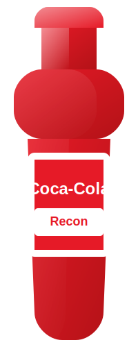

Recon's Coca-Cola
This is Recon's personalized Coca-Cola bottle. Recon prefers the classic Coca-Cola taste with a hint of vanilla.
About Recon
Recon has been a Coca-Cola enthusiast for over 10 years. Their passion for the classic taste has led them to collect various limited edition bottles from around the world.
Favorite Way to Enjoy
Recon enjoys their Coca-Cola best when it's served ice cold with a hint of vanilla extract added. They prefer to drink it from a glass bottle rather than a can or plastic bottle, claiming that the glass preserves the carbonation better.
Fun Fact
Recon once participated in a Coca-Cola tasting competition and could correctly identify different formulations from various countries in a blind taste test.
Back to All Bottles